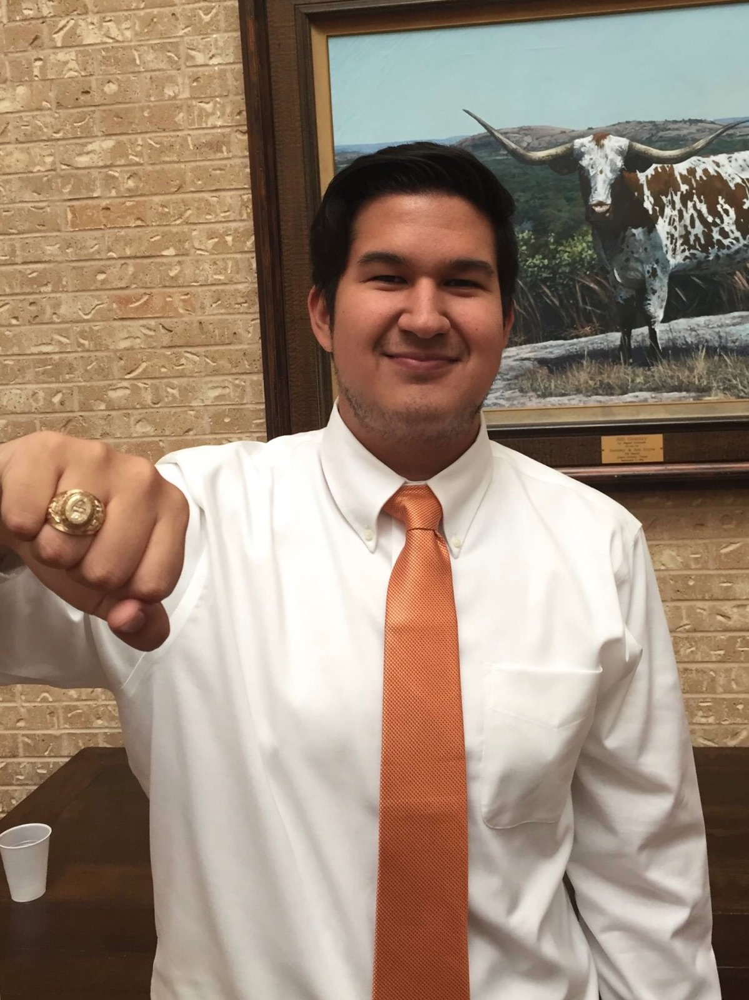

About Me

Hi, my name is Michael Guillen and i'm currently a student finishing my final semester at the University of Texas at Austin. I'm finishing my government degree in the Liberal Arts College, with a Business Foundations Certificate and a Spanish minor. I was one of the founding fathers of the Delta Upsilon fraternity on campus, with our focus being based around diversity, justice, and service. I also was involved in several other organizations such as Students for Bernie Sanders, Campus Events and Entertainment, and University Democrats. Last summer, I interned for The Austin School for the Visual and Performing Arts as the Non-profit Manager. Finally, i'm finishing up my post-graduate education with a certificate from the University of Texas at Austin Web Development Bootcamp.
Connect with Me


On the personal side of things, I'm originally from Temple, TX, a small town just an hour north of Austin. I am passionate about several things, all things I hope to make some sort of impact in eventually with my abilities and education. I love basketball, both playing and watching. Music, especially hip-hop/rap, is the thing that gives me energy throughout the day. I've always had a passion for theatre arts and film, and hope to bring that to underprivilaged kids eventually in my life. Finally, fashion has always been an important aspect to me as well, and I believe it's an important way to express oneself. I would eventually like to design my own clothing and find a way for underprivlaged kids to have more access to affordable clothes that they would like to wear.